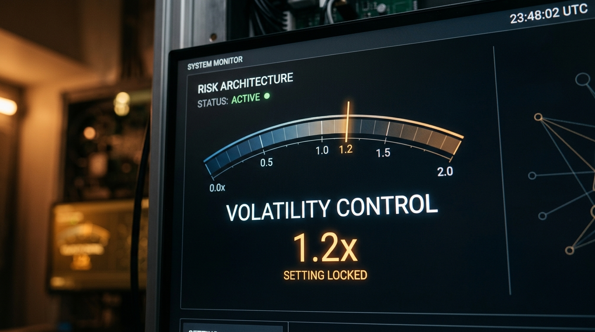

The research synthesized in this document establishes a mathematically rigorous framework designed to generate persistent excess returns (Alpha) on the S&P 500 while strictly adhering to a 120% volatility cap relative to the benchmark. This objective is achieved by challenging the Efficient Market Hypothesis (EMH) through the integration of three core pillars:
Key findings indicate that negative sentiment has an impact ~3x stronger than positive sentiment on returns, and that specific macro indicators, such as real 10Y yields, provide a predictable P/E compression ratio of 7% per 100-basis-point increase. Strategic tensions regarding execution frequency and "Active Share" metrics have been identified as critical areas for resolution prior to deployment.
The framework identifies and quantifies alpha through three distinct domains: behavioral signals, market microstructure, and macro-monetary dynamics.
Research into cognitive biases has yielded six engineered features targeting specific market inefficiencies:
Short-term edges are derived from the mechanical constraints of market participants and dealer positioning:
Macroeconomic indicators define the broader regime for equity valuations:
The core of the predictive engine is the Continuous-Time Temporal Fusion Transformer with Mixture-of-Experts (CT-TFT-MoE). This model is designed to handle the noise, non-linearity, and non-stationarity of financial data.
(dh(t)/dt = f_θ(h(t), t)), effectively handling missing data and
irregular intervals.Standard Mean Squared Error (MSE) is rejected in favor of a hybrid loss function (L_{total}) that aligns with economic utility:

To prevent overfitting—the primary failure mode in financial ML—the framework implements a rigorous "Purged and Embargoed" protocol.
For a signal to be deemed actionable, it must meet strict validation thresholds:
The translation of return predictions into actionable market exposure is governed by a modified Mean-Variance Optimization (MVO) framework.
The strategy uses Bayesian Shrinkage to prevent over-aggressive positioning on uncertain signals. The optimal single-asset weight (w^*) is:
Where:
Daily rebalancing is sensitive to execution drag. For a $1B AUM portfolio, annual drag is estimated at 14 bps.
(I = \sigma \cdot k \cdot \sqrt{V/ADV}) integrated into the optimizer as
an L1 turnover penalty.The synthesis of domain reports identified three critical contradictions that require immediate resolution: